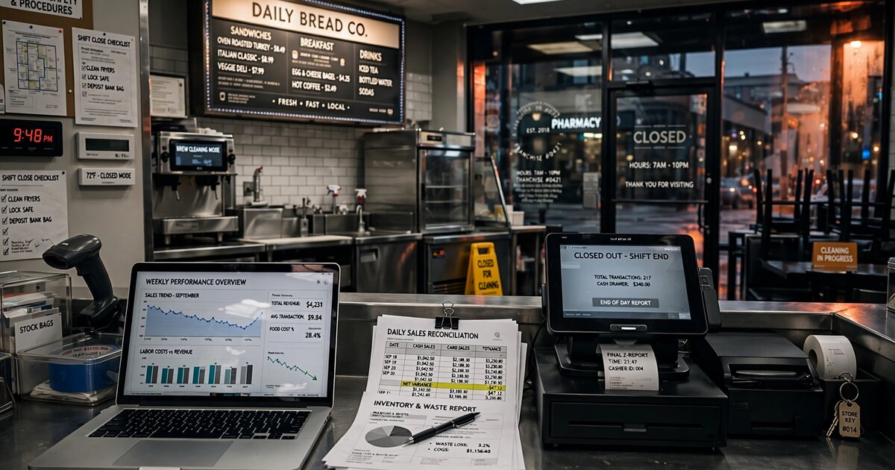

Franchise Unit Economics Intelligence Platform for Institutional Acquirers
In 2024, the franchise transfer rate hit 4.1%, a five-year high tracked by FRANdata. Bain Capital formed a dedicated franchise acquisition platform. Blackstone took a majority stake in Jersey Mike's. Roark Capital bought Subway for nearly $10 billion. Private equity has discovered that 845,000 franchise units represent a vast, fragmented pool of cash-flowing small businesses ripe for roll-up. What PE hasn't discovered is reliable unit-level data. Eighty-six percent of franchisors now disclose financial performance in their FDDs, but the disclosures are system-wide averages that tell you nothing about the specific location you're buying. SBA 7(a) loan data by franchise brand is technically public, but nobody has assembled it into a searchable risk database. The buyers have billions. The data has filing cabinets.

The Problem
A private equity associate evaluating a 50-unit Dunkin' portfolio in the greater Boston area faces a problem that would be unthinkable in commercial real estate, public equities, or even used-car pricing: there is no centralized database of franchise unit-level financial performance. The International Franchise Association reports that 845,000 franchise establishments will operate in the U.S. in 2026, generating $921.4 billion in economic output. These are real businesses with real revenues, real labor costs, real lease obligations, and real profitability. But the financial data that would let a buyer compare the economics of a Dunkin' in Quincy against one in Worcester, or a Wingstop in Dallas against one in Phoenix, does not exist in any form a buyer can access without months of manual due diligence.
Every franchisor selling in the U.S. must file a Franchise Disclosure Document with the FTC, and each FDD contains an Item 19 section where franchisors may disclose financial performance data. According to the 2024 Annual Franchise Development Report, 86% of franchisors now include Item 19 representations, up from just 20% in 1995. But "may disclose" and "useful data" are separated by a chasm. A typical Item 19 reports system-wide averages: median gross sales across all units, or average EBITDA for the top quartile. It tells you that the average Chick-fil-A does $9.3 million in annual sales but says nothing about what an individual location does, how geography affects performance, whether the unit three miles away is cannibalizing traffic, or what happens to economics when the lease renews at market rate.
Institutional capital is making this worse. Franchise Times reported that Bain Capital formed Prosper Growth Partners in late 2025, a dedicated franchise acquisition platform led by Steve Ritchie, former CEO of Papa Johns. Blackstone took a majority stake in Jersey Mike's and acquired Tropical Smoothie. Sizzling Platter, a 750-unit multi-brand operator, is reportedly being acquired by Bain for over $1 billion. These are not small-business purchases negotiated over a handshake. These are institutional transactions where the buyer's underwriting model needs unit-level economics, trade-area demographics, lease maturity schedules, and brand-specific default risk. And the data infrastructure available to support that underwriting is essentially a stack of PDFs filed with state regulators.
The Numbers
Globally, franchise resales reached $14.5 billion in 2025, with North America accounting for $8.7 billion, according to PW Consulting. The market is projected to reach $22.15 billion by 2032 at a 6.25% CAGR. Multi-unit acquisitions represented 61.4% of all franchise transfers in 2025, meaning most of the dollar volume flows through sophisticated buyers who would pay for better data.
FRANdata, the analytical firm that produces the IFA's annual outlook, reported that the franchise transfer rate reached 4.1% in 2024, the highest in five years of internal tracking. Applied to the current base of 845,000 units, that implies approximately 34,645 franchise units changing hands annually. We Sell Restaurants, a franchise resale brokerage, reported a 62.7% increase in franchise resale transactions through Q3 2025 compared to the same period in 2024. Business Research Insights found that retiring franchisees caused an 18% rise in resale listings, while 22% of new buyers preferred acquiring existing units over starting from scratch.
BizBuySell's 2025 Insight Report puts the median business sale price at $350,000, with total enterprise value across all reported transactions reaching $7.95 billion, up 3% from 2024. But these figures cover all small-business sales, not franchise-specific transactions. The franchise-specific data is worse than limited; it's structurally fragmented across 14 franchise registration states, each maintaining its own FDD filing archive, none of which offers programmatic access, full-text search, or cross-brand analytics.
Historically, the SBA 7(a) loan program has been the primary lending channel for franchise acquisitions. Between 2003 and 2012, the SBA issued $10.6 billion in franchise loans and paid $1.5 billion in guarantee claims on defaults, according to a GAO report. The SBA maintains a directory of approved franchise brands eligible for its lending programs. Loan-level data, including default rates by franchise brand, is obtainable through FOIA requests. But nobody has systematically assembled, cleaned, and published this data as a franchise-specific risk intelligence product. A PE firm evaluating a 100-unit acquisition can see the FDD's system-wide averages and the SBA's aggregate default statistics, but cannot easily determine: what is the 5-year default rate for this specific franchise brand, in this specific geography, at this specific investment size?
The Gap in the Market
Several companies touch franchise data, but none of them solve the unit-economics problem for institutional buyers.
| Company | What They Do | What's Missing |
|---|---|---|
| FRANdata | The industry's premier analytical firm. Produces the IFA's economic outlook, maintains the largest franchise database, tracks unit-level performance across 4,000+ brands. Clients include PE firms, banks, and franchisors. Washington, D.C.-based, ~40 employees. | A consulting firm, not a self-service platform. Enterprise engagements start at $25,000+. Data access requires analyst-mediated reports. No API, no programmatic access, no real-time alerts. Excellent at what they do, but they serve dozens of institutional clients, not thousands of operators and investors. The PE associate doing deal screening at 2 AM can't log in and run comps. |
| BizBuySell / BizQuest | The largest online marketplace for businesses for sale. Publishes quarterly insight reports with transaction data by market. Owned by CoStar Group. Tracks asking prices, sale prices, revenue multiples, and cash flow multiples across all small businesses. | A listings platform, not an analytics platform. No franchise-specific data layer. A buyer searching for Dunkin' units in BizBuySell sees whatever a broker chose to list, at whatever price the seller wants. No unit economics, no brand benchmarking, no SBA default risk overlay, no FDD Item 19 cross-referencing. It's Craigslist for businesses with better design. |
| Franchise Grade / FranchiseGrade.com | Rates franchise systems on a grading scale using FDD data. Covers ~2,500 franchise brands. Provides brand-level analytics: growth rates, litigation history, financial stability scores. | Brand-level analysis, not unit-level. Useful for a prospective franchisee evaluating which brand to buy into. Useless for an investor evaluating the economics of 50 specific locations within a brand they've already chosen. No SBA loan performance overlay. No location-level revenue estimates. No trade-area competitive density analysis. |
| Vetted Biz | Online platform providing franchise financial data, including FDD Item 19 summaries, investment ranges, and brand comparisons. Targets prospective franchisees, not institutional investors. | Summarizes Item 19 data as-reported by the franchisor, which means system-wide averages. Does not decompose performance by geography, unit age, operator experience, or competitive environment. No proprietary analytics layer. No integration with SBA loan data. The consumer-grade interface signals the customer: first-time franchise buyers doing research, not PE firms doing underwriting. |
| Franchise Brokers (Transworld, National Franchise Sales, We Sell Restaurants) | Full-service intermediaries matching franchise sellers with buyers. Manage valuations, negotiations, and closing. Typically earn 8-12% commission on sale price. | Exactly the problem. Brokers control information because their business model depends on it. A listing broker knows the P&L of the units they represent but has no incentive to provide comparable data that might reduce the asking price. There is no MLS for franchise resales. A broker in Tampa has no visibility into comparable transactions in Atlanta. The buyer's information disadvantage is the broker's margin. |
The pattern: every existing player either serves franchisors (FRANdata), serves first-time buyers with surface-level data (Franchise Grade, Vetted Biz), or serves as a broker whose incentives are structurally misaligned with the buyer's need for transparent unit-level analytics (BizBuySell, Transworld). Nobody is building the institutional-grade data platform that a PE firm, a multi-unit operator, or an SBA lender needs to underwrite franchise acquisitions at scale.
Consider residential real estate before Zillow, or more precisely, before CoreLogic built the property-level data layer that underpins every mortgage underwriting decision in America. CoreLogic aggregated county recorder data, tax assessor records, and MLS data into a normalized property database, then sold analytics on top. CoreLogic is a $6 billion company. Franchise units are property-like assets with recurring revenue, transferable ownership, and location-specific economics, but they lack the equivalent data infrastructure.
The Solution
A vertical intelligence platform for franchise unit economics, built for institutional acquirers and multi-unit operators, with three integrated data products:
1. FDD Intelligence Engine ($1,500/month per seat): Franchise Disclosure Documents are filed annually with regulators in 14 registration states (California, Illinois, Indiana, Maryland, Michigan, Minnesota, New York, North Dakota, Rhode Island, South Dakota, Virginia, Washington, Wisconsin, and Hawaii). These filings are public records. The platform systematically ingests every FDD filed across all 14 states, extracts Item 19 financial performance data, and normalizes it into a searchable, comparable database. For each franchise brand, the platform tracks: gross revenue ranges, EBITDA margins, startup costs (Items 5-7), royalty and advertising fund rates (Item 6), renewal and transfer provisions (Items 17-18), and litigation history (Item 3). Critically, the platform doesn't just reproduce what the franchisor reported. It compares Item 19 disclosures across years to identify trends (is median unit revenue growing or shrinking?), flags discrepancies between what a franchisor claims in Item 19 and what SBA loan data suggests about actual performance, and identifies brands where the gap between top-quartile and bottom-quartile performance is so wide that system-wide averages are meaningless.
2. SBA Loan Risk Intelligence ($2,500/month per seat): The SBA maintains a registry of franchise brands approved for its 7(a) and 504 lending programs. Loan-level performance data, including origination amounts, terms, and charge-off status, is accessible through FOIA. The platform maintains a continuously updated database of SBA franchise loan performance, organized by brand, geography, loan vintage, and size. For each franchise brand, it calculates: 5-year default rate, loss-given-default, average loan size relative to Item 7 startup costs, geographic concentration of defaults, and comparison to industry benchmarks. For an SBA lender evaluating a franchise loan application, this replaces the current process (check if the brand is on the SBA registry, then use generic small-business underwriting) with brand-specific, geography-specific risk scoring. For a PE acquirer, it provides a signal that no Item 19 disclosure captures: how many operators in this system actually fail, and where?
3. Unit-Level Economics Model ($5,000/month per seat): The premium product. It combines FDD data, SBA loan performance, county-level demographics (Census, ACS), commercial real estate data (lease rates, vacancy, traffic counts), and competitive density mapping (how many units of the same and competing brands operate within a 3-mile, 5-mile, and 10-mile radius) to generate estimated unit-level economics for every franchise location in the U.S. The model doesn't know what a specific Dunkin' in Quincy actually generates in revenue. But it can estimate that a Dunkin' in that specific trade area, given the population density, median household income, competitor count, and historical performance of comparable locations reported in Item 19, should generate between $1.1M and $1.4M in annual revenue with a 15-18% four-wall EBITDA margin. This estimate, calibrated against actual SBA loan performance and updated quarterly as new FDD filings arrive, is what an investor needs to build a discounted cash flow model for a specific acquisition without relying on seller-provided financials.
Original Analysis: The FDD-SBA Divergence Signal
Nobody, to my knowledge, has systematically compared what franchise brands claim in Item 19 of their FDD against what SBA loan performance data reveals about actual unit economics. This comparison matters because the two datasets have opposite incentive structures, and when they diverge, the divergence is diagnostic.
A franchisor's Item 19 disclosure is a marketing document with legal guardrails. The FTC requires that it have a "reasonable basis," but the franchisor chooses what to disclose: gross revenue for the top 50% of units, or average EBITDA across the full system, or median food costs for company-owned stores (which may have different purchasing economics than franchised units). The franchisor's incentive is to present performance data that makes the franchise attractive to prospective buyers while remaining legally defensible. This typically means reporting metrics that look good, excluding data that doesn't, and using aggregation to smooth over the distribution.
SBA loan data has the opposite bias. It overrepresents failure. A franchise unit that generates $2M in revenue with 20% margins and never needed an SBA loan doesn't appear in the dataset. A unit that needed $350,000 in SBA financing, struggled for three years, and defaulted appears prominently. SBA data is systematically pessimistic about franchise economics for the same reason that hospital data is pessimistic about human health: you're only seeing the patients who showed up.
Where it gets interesting is the comparison. A franchise brand where Item 19 reports median gross revenue of $1.2M but SBA loan data shows a 15% 5-year default rate (vs. a cross-franchise average of roughly 10%) is a brand where the system-wide averages are masking a fat tail of underperformers who couldn't service their debt. Conversely, a brand where Item 19 reports modest revenues but SBA default rates are well below average is a brand where unit economics are probably better than the disclosure suggests (perhaps because the franchisor is conservative in its Item 19, or because the brand attracts operators who don't need SBA financing).
This divergence analysis can be computed for every franchise brand that both files an FDD and appears in the SBA franchise registry. It requires no proprietary access, no insider data, no cooperation from franchisors. It requires only the systematic collection and normalization of two public data sources that nobody has bothered to combine. The resulting "FDD-SBA divergence score" would be, to my knowledge, the first independent, data-driven risk signal for franchise brand quality that doesn't depend on what the franchisor chooses to tell you.
Here is a rough calibration of what this signal would reveal. The SBA paid out $1.5 billion in guarantee claims on franchise loans between 2003 and 2012, on $10.6 billion in total franchise lending, implying a 14.2% loss rate over a decade (roughly 1.4% annualized). But this is an average across all franchise brands. The distribution is almost certainly power-law: a small number of brands likely account for a disproportionate share of defaults. Identifying those brands, and cross-referencing their default rates against their Item 19 claims, would produce actionable intelligence that no existing franchise data provider offers.
Revenue Model
| Revenue Stream | Amount | Notes |
|---|---|---|
| FDD Intelligence Engine (per seat/month) | $1,500 | Search, comparison, and trend analysis across all FDD filings. Target: franchise attorneys, franchise development teams, prospective franchisees with capital. 400 seats at year 3: $7.2M ARR. |
| SBA Loan Risk Intelligence (per seat/month) | $2,500 | Brand-level and geography-level default risk scoring. Target: SBA lenders (community banks, credit unions, franchise-focused lenders like ApplePie Capital and Boefly), PE firms. 200 seats at year 3: $6M ARR. |
| Unit-Level Economics Model (per seat/month) | $5,000 | Location-specific revenue and margin estimates. Target: PE franchise platforms (Prosper Growth Partners, Sizzling Platter, NPC International-type operators), multi-unit operators with 20+ locations, REIT teams evaluating franchise tenant credit. 100 seats at year 3: $6M ARR. |
| Transaction Intelligence (per report) | $5,000-$15,000 | Custom due diligence packages for specific acquisition targets. Combines all three data layers with bespoke trade-area analysis. At 80 reports/year by year 3: $800K. |
| Data licensing to lenders | Negotiated | Phase 2: embed the FDD-SBA divergence score into SBA lender underwriting workflows. Per-decision pricing or annual enterprise license. The SBA's own franchise directory is the distribution channel. |
Unit economics on a mid-tier seat: Monthly revenue at $2,500 (SBA risk tier): $30,000/year. Customer acquisition via franchise lending conferences (IFA Lending Conference, Franchise Finance & Growth Conference), targeted outreach to franchise-focused lenders, and content marketing (quarterly "State of Franchise Lending" reports published free). Estimated CAC: $8,000. LTV at 3.5-year average retention: $105,000. LTV:CAC ratio: 13x. High retention is driven by data compounding: each quarter, new FDD filings and SBA loan performance updates make the platform more valuable, and the switching cost increases because no competitor has built the same historical dataset.
Market Size
TAM: The franchise intelligence market sits at the intersection of franchise resales ($8.7B in North American transaction volume), franchise lending ($10B+ in SBA-guaranteed franchise loans over the last decade), and franchise development consulting. Sizing the TAM as the total spending on franchise-related data, analytics, and advisory services across all buyer types: institutional acquirers, multi-unit operators, prospective franchisees, franchisors, and lenders. Estimated at $420M/year, derived from: ~3,000 potential institutional seats ($5K/month × 12 × 3,000 = $180M addressable spend), ~15,000 potential mid-tier seats ($1.5K-$2.5K/month × 12 × 15,000 = $270-450M addressable spend, capped at $240M for conservative estimate).
SAM: Institutional franchise investors and lenders who would pay $2,500+/month for differentiated data. Includes: PE firms with franchise mandates (~150 active), franchise-focused lenders (~200 community banks and credit unions with material franchise portfolios), multi-unit operators with 20+ locations (~2,000 operators), and franchise attorneys at Am Law 200 firms (~500 practitioners). Estimated at $170M/year.
SOM (year 3): 700 SaaS seats across three tiers ($19.2M ARR) plus 80 transaction reports ($800K) plus early data licensing ($500K). Total year 3 revenue: ~$20.5M. This assumes FDD coverage across all 14 registration states, an SBA loan database covering 10+ years and 3,000+ franchise brands, and anchor customers among the top 5 franchise-focused PE platforms.
Why Now
Private equity's franchise thesis has matured from opportunistic to systematic. The formation of Bain Capital's Prosper Growth Partners, Blackstone's franchise acquisitions (Jersey Mike's, Tropical Smoothie), and Roark Capital's $9.55 billion Subway deal all signal that franchise acquisitions have moved from the domain of individual operators into institutional portfolio strategy. These firms need data infrastructure that matches their capital deployment speed. A PE firm evaluating a 200-unit franchise portfolio can't wait six months for a consulting engagement to produce unit-level analytics. They need the franchise equivalent of what Bloomberg provides for public equities: real-time, searchable, comparable data.
The transfer rate is at a structural inflection. FRANdata's 4.1% transfer rate in 2024 is the highest in five years, and every underlying driver is accelerating. Baby Boomer franchisees are aging out (the average franchisee is 55; the first Boomers turned 80 in 2026). Industry data shows retiring franchisees caused an 18% rise in resale listings. FRANdata forecasts soft sales and declining unit ROI ahead, which historically correlates with increased exits. We Sell Restaurants reported franchise resale transactions up 62.7% through Q3 2025. The supply of franchise units for sale is growing faster than the market's ability to value them.
The FDD data layer just became computationally accessible. Five years ago, extracting Item 19 data from FDD filings required manually reading each 300-page document. Today, LLM-powered document extraction can parse structured financial data from PDFs at scale, with human-in-the-loop verification for edge cases. The 14 registration states collectively process thousands of FDD filings annually. A systematic extraction pipeline, run quarterly, can build a comprehensive database of franchise financial performance data within 12 months. The technology existed before, but the cost of extraction made it prohibitive for anyone except FRANdata, which has been doing it manually for decades.
SBA transparency pressure is building. The GAO has repeatedly recommended that the SBA establish a franchise-specific loan performance database and share default rate data with prospective borrowers. Those recommendations remain unimplemented. But the political environment for SBA transparency has shifted: in 2024, SBA lending became a campaign issue when franchise loan default rates during the pandemic drew congressional scrutiny. A private-sector platform that publishes franchise-brand-specific SBA loan performance data fills a gap that the government has acknowledged but failed to close.
Startup Costs
| Category | Cost | Notes |
|---|---|---|
| FDD data extraction pipeline (year 1, all 14 states) | $350K | LLM-powered extraction from FDD PDFs filed with state regulators. Mix of bulk FOIA requests ($50-200 per state), automated PDF parsing, and human verification for Item 19 data (the highest-value, most variably formatted section). Target: 3,000+ brands with current FDDs, plus 5 years of historical filings for trend analysis. Two data engineers + one franchise law consultant for schema validation. |
| SBA loan data acquisition and processing | $150K | FOIA requests to SBA for franchise-specific 7(a) and 504 loan data. Cleaning, normalization, and matching to franchise brand identifiers. Historical data back to 2010. One data engineer + legal counsel for FOIA compliance. Ongoing quarterly updates via automated FOIA requests. |
| Software development (12 months, 5-person team) | $600K | 2 backend engineers (data pipeline, search, analytics API), 1 frontend (institutional-grade dashboard with export), 1 data scientist (unit-level economics model, divergence scoring), 1 product manager. Priority: FDD search and comparison tool (months 1-4), SBA risk overlay (months 3-6), unit-level model (months 6-12). |
| Trade-area data licensing | $120K/year | Census/ACS data is free. Commercial real estate data (lease rates, traffic counts) requires licensing from providers like Placer.ai, CoStar, or SafeGraph. Competitive mapping from business registry data (Dun & Bradstreet, Google Places API). Budget covers year 1 licensing for the unit-level economics model. |
| Franchise law and regulatory compliance | $100K | Engage franchise attorneys in each registration state to validate data extraction methodology, ensure compliance with state-specific FDD access rules, and review platform's public presentation of FDD-derived data (some states restrict republication). Not a one-time cost; ongoing as data coverage expands. |
| Sales and marketing (year 1) | $150K | Targeted outreach to PE franchise platforms, franchise-focused lenders, and multi-unit operator groups. Conference presence at IFA Annual Convention, Multi-Unit Franchising Conference, Franchise Times Finance & Growth Conference. Content marketing: quarterly "Franchise Unit Economics Report" published free to establish authority. No mass-market spend. |
| Operating buffer (12 months) | $80K | Cloud infrastructure (document processing, database hosting, API compute), insurance, miscellaneous. Lean operation in year 1. |
| Total | $1.55M |
Limitations
A top-down estimate, the $420M TAM is derived from potential seat counts and price points, not from observed spending. No industry report sizes the "franchise intelligence" market as a discrete category because it doesn't exist as one yet. The actual addressable market depends on whether institutional franchise investors (who currently rely on FRANdata consulting engagements and broker-provided P&Ls) would shift spending to a self-service platform, or whether they'd treat it as additive. If additive, the TAM is closer to $100-150M. If substitutive, it could exceed $420M by displacing some consulting revenue.
FDD data extraction is messier than it sounds. Item 19 is the least standardized section of the FDD. Some franchisors provide gross revenue for all units; others provide net income for company-owned stores only. Some break data by region; others don't. Some provide footnotes that materially change the interpretation of the headline numbers. LLM-powered extraction will handle the structured tables but will struggle with the interpretive context that makes Item 19 data useful. Human review remains necessary for at least 20-30% of filings, which limits the speed and cost advantages of automation.
SBA loan data has survivorship bias in reverse: it captures failure but not success. A brand where 90% of operators self-finance (because unit economics are strong enough that operators don't need SBA loans) will have thin SBA data that skews negative, since the SBA borrowers are disproportionately undercapitalized. The FDD-SBA divergence score partially corrects for this by treating low SBA loan volume as a signal, but the correction is imperfect, and users must understand that SBA data tells you about the tail, not the center, of the performance distribution.
Franchisor cooperation is not required but would be helpful. The platform builds entirely on public data (FDD filings, SBA records, Census data, business registries). But some franchisors may object to the republication of their Item 19 data, even though it's filed as a public record. The legal basis for aggregating and republishing public-record FDD data has not been tested in court. State-specific restrictions vary: some registration states consider FDD filings to be public records available to anyone; others restrict access to prospective franchisees. Legal counsel in each state is a non-optional cost.
Strongest Counterargument
FRANdata already does this, and they have a 35-year head start. That is the strongest objection, and it deserves full engagement because FRANdata is not a weak competitor. They maintain the largest franchise database in the world, covering 4,000+ brands. They produce the IFA's official economic outlook. They have relationships with every major franchisor and franchise lender. Their CEO, Darrell Johnson, is the person who presented the 4.1% transfer rate data that this entire article cites. If anyone can build the platform described here, it's FRANdata.
The counterpoint is structural, not dismissive. FRANdata is a consulting firm. Its revenue comes from bespoke engagements, each requiring analyst time, custom deliverables, and relationship management. This is a high-margin model that works brilliantly for serving 50 institutional clients who each pay $100,000+ per year. It does not scale to serving 5,000 clients at $18,000-$60,000 per year through a self-service platform, because self-service cannibalizes the consulting revenue from the existing 50 clients. This is the classic innovator's dilemma: FRANdata's best customers don't want a platform, they want a phone call with Darrell Johnson. Building the platform means telling those customers that the data they've been paying six figures for is now available to everyone at a fraction of the price.
The second structural barrier is that FRANdata's franchisor relationships, its greatest asset, become a liability in the context of a transparency platform. FRANdata serves franchisors as well as investors. A platform that publishes the FDD-SBA divergence score, effectively rating the honesty of a franchisor's Item 19 disclosure relative to actual loan performance, would alienate half of FRANdata's client base. A new entrant without franchisor relationships has no such constraint. This is the same dynamic that prevented credit rating agencies from disrupting their own models until fintech companies built independent credit scoring. The incumbent's relationships protect them from competition but also prevent them from building the product that would serve the buy side best.
That said: FRANdata could build this if forced. If a startup gains traction in the institutional segment, FRANdata's likely response is to launch a competing data product leveraging their existing database. The startup's moat is not the data itself (it's all public) but the speed of aggregation, the quality of the analytics layer, and the willingness to publish signals that FRANdata's franchisor relationships prevent them from publishing. Move fast, publish the divergence scores, and establish the platform as the independent, buy-side alternative before FRANdata adapts.
What You Can Do
If you're a PE firm evaluating franchise acquisitions: Start building your own FDD database now. File FOIA requests with California, Illinois, and New York (the three largest registration states by filing volume) for the FDDs of every brand in your target universe. This costs $50-200 per state per request and takes 4-8 weeks. Extract the Item 19 data into a spreadsheet and track year-over-year changes. Simultaneously, file a FOIA with the SBA for 7(a) loan performance data by franchise brand code. Cross-reference the two datasets. You will find brands where the Item 19 looks good but the SBA data tells a different story. That cross-reference is worth more than the consulting fee you'd pay for a third party to tell you the same thing with a prettier slide deck.
If you're a multi-unit franchisee considering an exit: Your units are worth what a buyer can underwrite, and right now, buyers are flying blind. Prepare your own unit-level P&Ls (not the system-wide averages from your franchisor's Item 19) with at least 3 years of trailing data per location. Include lease terms, remaining lease duration, renewal options, and current market rent for comparable spaces. A buyer who can model your specific unit economics with confidence will pay a premium over one who's guessing. The franchise resale premium (1.5x vs. non-franchise businesses, per Palm Beach Atlantic University research) only materializes when the buyer has data to justify it.
If you're an SBA lender: Stop treating the SBA franchise registry as a binary: "approved" or "not approved." The registry tells you that the SBA permits lending to a brand, not that lending to a brand is prudent. Build a simple model tracking your own portfolio's default rate by franchise brand, and compare it to the SBA's aggregate franchise default rate (approximately 14% cumulative over 2003-2012, or about 1.4% annualized). Any brand in your portfolio defaulting at 2x or more the average warrants tighter underwriting. This analysis uses only your own loan performance data and takes a competent credit analyst a week to build. If you want the broader industry dataset, file the FOIA. The SBA is legally obligated to provide it.
If you're a builder: The wedge is the FDD extraction pipeline, not the analytics. Build the extraction engine, process the 14 registration states, publish a free "FDD Search" tool that lets anyone search and compare Item 19 data across brands. This is the content marketing play that establishes authority and generates inbound. The paid products (SBA risk overlay, unit-level economics model, transaction intelligence reports) sell themselves once the free tool demonstrates that you have the data. Seed funding of $1.55M gets the platform to data coverage across all registration states with 50+ paying institutional seats. Series A should target 200+ seats and the first lender integration.
The Bottom Line
There are 845,000 franchise establishments in the United States generating $921 billion in economic output. They change hands at a 4.1% annual rate, a rate that is rising because the operators who built these businesses are aging out and the institutional capital that wants to buy them is scaling up. And the data infrastructure supporting these transactions consists of PDF filings in state archives, FOIA-able government loan records that nobody has FOIA'd at scale, and broker relationships built on the structural advantage of knowing something the buyer doesn't. The buyers writing billion-dollar checks for franchise portfolios are making those decisions with less data, per dollar deployed, than you had the last time you bought a used car on CarMax. Someone is going to build the CarMax data layer for franchising. The data is public. The demand is institutional. The timing is now.